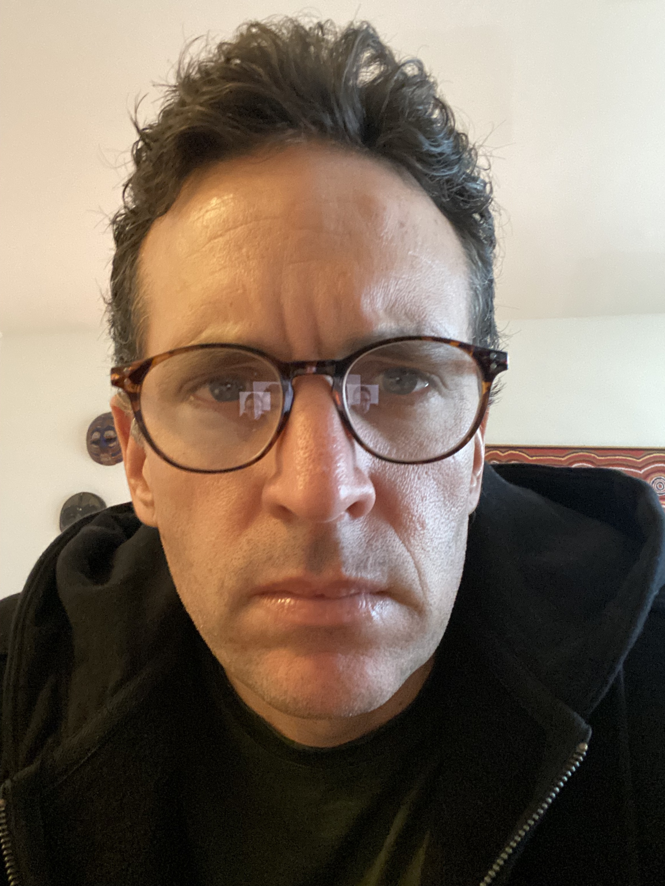

On March 8, 2021 I was greeted by a young American soldier as I entered the Javits Center to receive my first COVID vaccine. After a year of fear, isolation, and global upheaval, the mRNA vaccine was a turning point for humanity. Developed with unprecedented speed through the United States government's Operation Warp Speed, it was a triumph of modern science working in concert with public policy. But, just four years later, federal advisory committees on immunization were dismantled, funding for mRNA vaccine development was halted, and federal support for scientific research — from cancer biology to space exploration — was sharply reduced. The scientific enterprise, long credited with driving economic growth, extending human lifespan, and expanding our understanding of the universe, had become politically vulnerable and publicly contested. What happened?
This engaging 1-credit course explores how science works in society — not just in laboratories and journals, but in governments, markets, media, and everyday life. Through discussions and real-world case studies, students from all disciplines will examine the origins of modern science and confront the social, political, and economic forces that shape the scientific enterprise.
The course combines weekly lectures, in-class activities, and Q&A with notable NYU scholars and guests to grapple with the central challenges facing science today and to consider how science can best serve society.
Each session runs Wednesday 6:00–7:30 PM and features a 20-minute lecture, 20 minutes of in-class activities, and a 45-minute Q&A with a distinguished guest.


Discussion Questions
What Is the Philosophy of Science and Why Should Scientists Care?
- When we talk about science we typically talk about it as a procedure — hypothesis, experiments, results. We rarely ask what science actually is, or how it generates knowledge we can trust. Can you tell us what the philosophy of science is and why it is useful for understanding what science can and can't do or know? Follow-up: Can you give an example of a time when philosophical analysis of science changed how scientists actually worked or how we interpreted a result?
"Irrationality Created Modern Science" — What Does That Mean?
- Your book opens with what sounds like a paradox: modern science, the most reliable knowledge-generating system in human history, was built on a form of irrationality. You describe an "iron rule" that constrains scientists to resolve disputes only through empirical testing — a constraint that is, in a meaningful sense, irrational, because it forbids scientists from using their full intellectual toolkit. Can you walk us through that argument? In what sense is science irrational, and why did that irrationality turn out to be so productive? Follow-up: If the iron rule is irrational, does that mean scientists are, in some sense, being asked to suppress their better judgment in order for the system to work?
Why Did It Take So Long?
- Anatomically modern humans have existed for at least 200,000 years. We had language, tools, politics, economics, curiosity, and genius. And yet systematic empirical science only emerged about 400 years ago. What was missing, and what finally clicked into place in 17th-century Europe? Follow-up: Could the scientific revolution have happened in China, or in the Islamic world, or in ancient Greece — and if not, why not?
Where Does Mistrust in Science Come From?
- When we look at the current climate of mistrust toward science — vaccine hesitancy, climate change denial, suspicion of public health institutions — is this genuinely unprecedented, or does it have historical precedents? Is there something about how science works that makes mistrust almost inevitable? Follow-up: Does the iron rule produce knowledge but also make science less legible to the public — and is that a tradeoff we should rethink?
What Are the Biggest Challenges Science Faces from the Inside?
- Looking at science from the inside — how it actually operates — what do you see as the most serious structural challenges it faces right now? Are problems like the replication crisis and the pressure to publish problems with the iron rule itself, or with the social and institutional structures that have grown around it? Follow-up: Is the replication crisis a sign that the iron rule is failing, or a sign that it's working — that science is self-correcting?
What Practical Steps Could Actually Make Science Better?
- Suppose you were advising a commission that had real power to change how science is funded, how scientists are trained and evaluated, how results are published, and how findings are communicated to the public. Where would you put your energy? What two or three reforms would actually move the needle, and why are those changes so hard to make? Follow-up: Is there anything the scientific community could do right now, without waiting for policy change, that would help?
How Should Science Education Change?
- If you could redesign science education — not just for future scientists, but for every student and citizen who will have to evaluate scientific claims throughout their lifetime — what would you change? Follow-up: Do you think a scientist who has never studied philosophy of science is missing something important, or can good science be done in philosophical ignorance?
What Should We Take Away?
- You've spent your career studying science from the outside, as a philosopher rather than a practitioner. Has that vantage point changed how you personally decide what to believe when you read about scientific findings? Follow-up: What is your advice for how an informed citizen — whether a scientist or a non-scientist — should read a scientific claim?
Next Steps
- If someone is interested in learning more about the philosophy and history of science, what book and/or class would you recommend?

Sloan Foundation
Discussion Questions
The Sloan Foundation
- Who was Alfred P. Sloan, and why did a General Motors executive in 1934 decide to start a foundation devoted to science?
- What does the Foundation's mission look like in practice? What does Sloan fund today, and what does it not fund?
- Can you share a success story — a grant where Sloan's money made something happen that otherwise wouldn't have?
How the Foundation Works
- Sloan has an endowment of roughly $2 billion. How much do you spend each year, and who decides how it's divided among programs?
- How does a grant actually get made? Does a scientist apply, or does the Foundation go looking?
- Sloan is unusual in funding the public understanding of science — films, books, plays. Why does a science foundation spend money on culture?
- How does a foundation decide when to stop funding something, and what happens to the people who had the grant?
Federal Funding and Philanthropy
- The federal government spends far more on science than every foundation combined. What is philanthropy for? What is the argument for a Sloan Foundation existing at all?
- What can a foundation do that a federal agency can't?
- Federal grants come with heavy overhead; foundation grants usually don't. What does the Foundation give up by being less onerous, and what does a university lose when it takes foundation money instead of federal money?
- Foundations answer to their boards; agencies answer to Congress and the public. Does that make philanthropy more free, or more subject to the views of a small number of people?
Recent Changes in Federal Funding
- Have the recent changes in federal funding changed what Sloan funds, or only how? Are you seeing more proposals, different proposals?
- Are philanthropies facing some of the same challenges as universities, the NIH, and the NSF?
- There's a risk that if philanthropies step in, it makes the cuts look survivable. Is there a version of "helping" that actually makes things worse?
- What would you want a room of twenty-year-olds to understand about who pays for science and why it matters to them?

The New York Times
Discussion Questions
This Week
- It's climate week in New York City, the UN General Assembly is meeting, and there is a UN High-level meeting on pandemic preparedness. Can you walk us through what these events are, how they relate to health and science, and your involvement?
Measles Outbreaks
- The US is on pace to lose its measles-elimination status with over 2,300 cases, almost entirely among the unvaccinated. How did we get here, and how worried should we be?
Other Recent Outbreaks
- This year we've seen hantavirus, Ebola, bird flu, and cyclospora outbreaks. At the same time, you've reported on amazing advances against HIV. Why is infectious disease uniquely subject to politicization?
Changes to Recommended Vaccines
- You covered Trump's executive order cutting the childhood vaccine list from 17 to 11 shots and mandating that the MMR be split into three separate injections. What actually changed, and why were pediatricians and vaccine scientists alarmed?
How a Science Journalist Finds and Reports Stories
- Your piece on the enforced quarantine of hantavirus-exposed passengers on a cruise ship: how did you find it, who did you call first, and what ultimately got cut?
- How do you approach the reader comments and the dialogue between journalists and readers in NY Times articles?
How Science Communication Is Changing
- You've worked through COVID, the rise of health influencers, and an HHS secretary who bypasses federal agencies and goes straight to social media. How has your job changed?
- Has the Times changed how it covers vaccine claims as a result? More fact-checking, different language, different considerations?
- Scientists accept that new results may be overturned. How do you convey that uncertainty in a news article without undermining the advance you're reporting?
How to Know What to Believe
- When we read a headline and article about a new study in any source, what are two or three questions you think we should ask before believing it?
Public Mistrust in Science
- Is mistrust in science new in our lifetimes, and do you have ideas about its origins?
- Do you think the way scientists operate — working within academic institutions and companies — has contributed to the growing mistrust? What should scientists be doing to counteract this?

Discussion Questions
The Job
- Most students have never heard of a vice provost for research. What does the job actually involve? What would surprise people about it?
- You trained as a neuroscientist. What made you move from doing science to running the systems that support it? What do you see now that you couldn't see as a researcher?
Financial Oversight
- NYU spends well over a billion dollars a year on research, much of it from federal agencies. What does the university promise the government when it accepts a grant, and how do you check that the money is spent as promised?
- What are "indirect costs" or "overhead"? What do they pay for, and why did they become a political fight?
- Many universities refuse research funding from the tobacco industry. Should the same apply to fossil-fuel companies or AI companies? Is disclosing conflicts of interest enough?
Research Ethics
- What happens when a faculty member or student at NYU wants to do research on human beings? What gets reviewed, by whom, and how long does it take?
- He Jiankui worked around his own institution's ethics review. What protects people when research is privately funded or done by a company?
- How does a university bring affected communities into research decisions without just ticking a box?
Research Integrity
- What counts as research misconduct? What falls in the gray zone — sloppy data management, undisclosed conflicts, questionable authorship?
- When someone is accused of research misconduct, what happens next? What protects the whistleblower, and what protects the accused from a false allegation?
- What are the real consequences — losing a job, being barred from federal funding, having papers retracted? Are the penalties strong enough to deter people?
- What is the most common problem your office actually deals with?
Academic Freedom vs. Harm
- Imagine an NYU researcher wants to study a possible link between vaccines and autism — thoroughly debunked but now being revived at the federal level. Would NYU's review process stop that study? Should it?
- Is there research you think a university should not do at all, or research that is harder to do today than it should be?
The Federal Landscape
- The last two years brought grant terminations, proposed caps on indirect costs, and new research-security rules. What has changed most, and how has NYU had to respond?
- When a grant is terminated mid-project, what happens to the students, postdocs, and research participants who depended on it?
- The administration argues federal science needs more accountability and reproducibility. Where does the critique have a point, and where does it go wrong?
- Is private and philanthropic funding a substitute for federal funding? What changes about science when the funders change?

Discussion Questions
What Is Retraction Watch?
- In 2010 you and Adam Marcus started a blog about retractions. What was your motivation? What did you expect to find, and what did you actually find?
- What began as a blog is now a nonprofit with 50,000+ retractions and a Crossref partnership. How did that happen, who pays for it, and how secure is its future?
- How does Retraction Watch work in practice? Where do your stories come from?
Why It Matters
- Before Retraction Watch, a retraction was often a short, vague notice that few people saw. Why does it matter that someone tracks retractions publicly and explains them?
- Science is supposed to correct itself. Is Retraction Watch evidence that self-correction works, or evidence that science needs outside help to do it?
What Gets a Paper Retracted?
- What are the grounds for retracting a paper, and who makes the decision: the authors, the journal, or the scientist's university?
- Journals can also issue a correction or an "expression of concern." Where is the line between fixing a paper and removing it?
- A 2026 analysis found retraction rates differ roughly a hundredfold between major publishers. Is a low retraction rate a sign of quality or reluctance to act?
Retraction vs. Irreproducibility
- Large replication projects found most psychology findings and many cancer-biology findings don't hold up, yet those papers remain with no flag. Does science need a way to mark findings that have failed replication?
- The fact that many studies can't be reproduced has been cited in Trump's executive order on "Gold Standard Science" and the Kratsios "Golden Age" proposal. Is this a valid criticism of systemic problems in how science operates?
What Irreproducibility and Fraud Mean for Science
- Only a few papers in 10,000 are retracted, but there may be much more widespread fabricating or falsifying. How large do you think is the part of the iceberg we don't see?
- Do we have historical data? Is science becoming more fraudulent, or are we finally looking?
- Your work could be used to argue that science can't be trusted. What would you tell people who make that argument?
The Consequences of Retraction
- Does a scientist who retracts their own paper for an honest mistake pay the same price as one who committed fraud, and should they?
- Retracted papers keep being cited — Wakefield's paper still circulates. What should be done to stop that?
How Science Needs to Change
- You've said that if universities don't want the literature overwhelmed with garbage, they should stop rewarding people for publishing so much of it. What incentive would you change first?
- Most fraud is caught by outsiders like Elisabeth Bik and the Data Colada bloggers, not by peer review. Should finding errors in published work be a funded, credited job? Who should pay for it?
The Future in the Age of AI
- How do you think AI is going to impact fraud in science and retractions?

Discussion Questions
A Political Scientist Looks at Science
- Can you explain how a political scientist studies politics, policy, and what people believe, and how that intersects with science?
- You recently became the founding director of NYU's Berkley Institute for Civil Discourse & Civic Solutions. What is the Institute trying to do, and why does a university need one now?
Distrust in Science
- In January 2026 Pew found 77% of Americans have at least a fair amount of confidence that scientists act in the public interest — down from 87% in April 2020, with almost all the decline among Republicans. How should we read those numbers? Is this a crisis?
- The COVID pandemic precipitated a reduction in trust in science. How do you explain that — given that science delivered a vaccine within a year?
Political Divisions and Science
- Your book Partisan Priorities argues each party "owns" certain issues. Has science itself become an issue that one party owns? What are the consequences for science?
- When climate change first entered politics, Republicans and Democrats were about equally concerned. How did it become one of the most polarized issues? Did voters lead, or did they follow party elites?
- Childhood vaccination used to be broadly bipartisan. With record measles cases and a federal government that has cut the childhood vaccine schedule, are vaccines on the same path as climate?
- In 2020, Nature endorsed Joe Biden for president, and a later study found it lowered Trump supporters' trust in Nature and in scientists generally, without changing any votes. Should scientific journals and organizations take political positions?
- Is distrust of science only on the right? Isn't there a history on the left — on GMOs, nuclear power — and is it the same phenomenon?
- What should the role of scientists be in public policy? One criticism in In Covid's Wake was that scientists had too much authority on issues like shutdowns and school closures.
Difficult Conversations
- Students in this room may have relatives who won't vaccinate their children, who think climate change is a hoax, or who believe in intelligent design. How do you suggest engaging with people who hold views contrary to a science-based understanding of the world? Is giving people correct facts useless?
- People are most influenced by individuals they directly interact with — their doctor, religious leaders, family. How can scientists more directly influence these relationships?
- Media coverage often puts one scientist against one skeptic, so a 97-to-3 consensus looks 50-50. How do you reconcile civil discourse with not giving fringe claims equal standing?
- How much of distrust in science is really resentment of experts and a college-educated elite?
What Should We Do?
- If you could give scientists and universities one piece of advice for rebuilding trust across the political divide, what would it be? What should individual scientists do differently tomorrow?
- What can students in this room do, whatever their major?

Discussion Questions
Opening
- Students know what a scientist and a professor is, but many don't know what a Dean is. What is the job of Dean of the Faculty of Arts and Science? What is a typical day for you?
- Before you were a scientist you were a journalist — you covered the aftermath of Benigno Aquino's assassination, and a prime minister threatened to sue you for libel. Then you turned down a job offer from the Associated Press to finish a chemistry degree. Why did you choose science? Does your background in journalism shape how you think about science and the public?
Looking Back: What's Wrong, and What's Right
- This class has spent six weeks on how science is funded, communicated, misused, undermined by irreproducibility and fraud, and how trust has collapsed along political lines. As a scientist and a dean, which of these worries you most? And which do you think is overblown?
- Your research on crop domestication has potential applications for food security in the face of climate change. Did you choose your questions for their usefulness, or did the usefulness come later? Should we expect scientists to justify their work by its uses?
What Is a University For?
- Vannevar Bush's Science: The Endless Frontier made the research university the engine of American science. Do you think that 80-year compact is still working, or is it broken?
- The Kratsios "Golden Age" proposal would direct more federal money around universities — through golden tickets, prizes, and ARPA-style agencies. Meanwhile, interesting science is happening outside universities at the Arc Institute, HHMI's Janelia campus, and AI companies. Is the university still the best place to do science?
- Universities set the incentives scientists respond to: who gets hired and promoted is decided largely by papers in high-profile journals and grant dollars. What would it take for a university like NYU to reward rigor, replication, open data, or public engagement?
The University Under Pressure
- Since 2025, universities have seen federal grants terminated, proposed caps on indirect costs, and proposed cuts to NIH and NSF funding. What has this meant for Arts & Science at NYU? What do students not see about how these cuts impact NYU?
- Should universities try to become less dependent on federal money — by turning to philanthropy, industry, or their own endowments? Are there other models for funding basic research?
- The success of American science has depended on talent from around the world. Changes to immigration laws are reducing the flow of international scholars and students to the US. What happens to American science, and to universities like NYU, if fewer international students and scientists come here?
Universities, Science, and Society
- Universities and the scientists in them are seen as an elite that is out of touch with, or hostile to, many Americans. Do you think that's fair? How does NYU earn the trust of people who will never set foot on campus?
- Should universities take public positions on issues where science and politics meet — climate change, vaccines, cuts to research funding?
- Many students in this room are not science majors. Should every NYU student have to learn how science works: not just facts, but how evidence is produced, judged, and corrected?
The Future of Science
- The New York Times recently asked 100 scientists for the most important unanswered question in their field — full of curiosity-based questions. When I asked students in this class, their list leaned toward urgent problems. Who should set the agenda for science: scientists themselves, the public, or governments?
- For their last assignment, students will look 25 years into the future and predict what scientific problem has been solved. If you look 25 years ahead, what is the one thing you hope will be solved, and what might have to change about how science is done in order to realize that goal?
Advice
- What can students in this room do for science, whatever their major?
- What should science students be learning outside of science to best prepare them for positively impacting the scientific enterprise?
Course Information
What's Wrong With Science? (BIOL-UA 800) — Fall 2026
September 9 – October 21, 2026 • Wednesdays 6:00–7:30 PM • Cantor Film Center, Room 101
Instructor: David Gresham, Professor of Biology
Office: 12 Waverly Place, Room 405
Office Hours: Tuesdays 4:00–5:30 PM and by appointment (in-person or Zoom)
Email: dgresham@nyu.edu
Course Description
Science is one of the most powerful forces shaping the modern world. It drives technological innovation, informs public policy, fuels economic growth, and reshapes how we understand life, the planet, the universe, and ourselves. Yet science is increasingly challenged by political polarization, economic pressures, misinformation, and public mistrust.
This engaging 1-credit course explores how science works in society — not just in laboratories and journals, but in governments, markets, media, and everyday life. Through discussions and real-world case studies, students from all disciplines will examine the origins of modern science and confront the social, political, and economic forces that shape the scientific enterprise. The course combines weekly lectures, in-class activities, and Q&A with notable NYU scholars and guests to grapple with the central challenges facing science today and to consider how science can best serve society.
Course Learning Objectives
- Explore the foundational concepts of scientific inquiry
- Examine how science is done in practice and how it progresses
- Analyze the origins of mistrust in science and its increasing polarization
- Confront the legacy of misuse of science in society
- Provide a platform to discuss how science impacts our lives and society
- Provide a foundation from which to contribute to enhancing the benefits of science for society
Student Learning Outcomes
By the end of this course, you will be able to:
- Articulate how science is undertaken, funded, and communicated
- Analyze the interconnectedness of science with politics and economics
- Evaluate the prevalence and origins of mistrust in science
- Critically examine the social and ethical implications of science
- Synthesize your learning to create a final project that examines the role of science in society
How to Pass This Course
To receive a Pass, you must meet all of the following criteria:
- Attend at least 6 out of the 7 scheduled sessions
- Actively participate in class discussions and activities
- Complete and submit all assignments and the final project by the stated deadlines
- The final project must earn a Satisfactory or Excellent rating based on the project rubric
You will receive a Fail if you miss more than 1 session, fail to submit a required assignment or the final project, or if your final project receives a Needs Improvement rating and is not revised to a satisfactory level.
Course Requirements
Attendance (20%) — This is a short, pass/fail course and being present is essential. To pass the class you must attend at least 6 of the 7 class sessions.
Assignments (60%) — Ongoing engagement through homework assignments: discussion forum posts, video annotations using Annoto, quizzes, reflections, and more.
Final Project (20%) — Explore a specific question or topic and apply key course concepts. Completed individually or in groups of 2–3 students. Presented as a recorded narrated presentation, video, or audio, plus a 1-page individual reflection.
Academic Policies
Digital Devices: "Lids Down" policy during lectures. Devices are welcome during polls, data activities, and research tasks.
AI Use: AI tools are permitted as a starting point for brainstorming and copy editing. You must describe your use, acknowledge limitations, and ensure the final work reflects your own critical thinking. Submitting inaccurate AI-generated content will be treated the same as if you wrote it yourself.
Academic Integrity: All students are responsible for complying with NYU's policy on Academic Integrity. Cite all sources.
Accessibility: Students requesting academic accommodations should contact the Moses Center for Student Accessibility (212-998-4980 / nyu.edu/csa).
Course Schedule
Session 1: What is science? The history and philosophy of science.
Guest: Michael Strevens (NYU Professor, Philosophy)
Session 2: Who should pay for science? The economics of science funding.
Guest: Nate Williams (The Sloan Foundation)
Session 3: How science is communicated. From science publishing to the popular press.
Guest: Apoorva Mandavilli (Science Journalist, The New York Times)
Session 4: The dark side of science. Eugenics, the atomic bomb, and fomenting doubt.
Guest: Nina Gray (NYU Vice Provost of Research)
Session 5: When should we believe science? The replication crisis, fraud, and retractions.
Guest: Ivan Oransky (NYU Distinguished Journalist in Residence & Co-founder, Retraction Watch)
Session 6: Politics and science: mistrust, misinformation, and polarization.
Guest: Pat Egan (NYU Politics & Director, NYU Berkley Institute for Civil Discourse & Civic Solutions)
Session 7: The future of science. How can we use science to solve large societal problems?
Guest: Michael Purugganan (NYU Dean of the Faculty of Arts and Science & Professor of Biology)
Assignments deepen engagement with course materials and serve as a tool for dialogue with classmates and the instructor. They take different forms: in-class reflections, Padlet posts, written analyses, and a final project.
For each class, write one sentence about the most interesting thing you learned.
Introduce yourself on the Padlet map by answering: What is your name? What's your major? What's the best thing you read, watched, or listened to this summer? What is one thing that would make this class worth your time?
Make an office hours visit before October 21, either in person or on Zoom. Write one sentence about our discussion.
Based on Michael Kratsios's (Assistant to the President for Science and Technology & Director, Office of Science and Technology Policy) The New Golden Age of Science proposal, in no more than 250 words describe one change you agree with (and why) and one change you disagree with (and why). Quote the text using your citation method of choice. Or: in 250 words or less, describe a new system for funding US science that will herald a new era of innovation and discovery for the betterment of society.
Find a popular news article reporting a scientific finding and read the whole article. Find the original scientific article it is based on and read the abstract. Write a 150-word assessment of whether the news article accurately reports the science and how they differ. Provide citations for both. Bonus: find the university press release and add a <50-word accuracy check.
Take the NY Times AI & nuclear weapons quiz and report your score. Then, in 135 words, explain how scientists and society should respond to AI right now. Your answer must draw on one lesson from the history of science, name who should act, and identify one way the threat of AI differs from all previous challenges.
Pick one scenario: (a) Convince me to vaccinate my child — a skeptical parent who has read about overcrowded vaccine schedules; or (b) Convince me to cancel my summer vacation to Europe — someone who already recycles and takes the subway. Post on Padlet as a video (60 seconds or less), a poster/visual, or text (200 words or less).
It is 2051 and the most important unsolved problem in science has been solved. Write the headline and tell the story: (1) the science — what discoveries made the breakthrough possible? (2) the system — what changed in how science is funded, organized, communicated, and trusted? Your story should be plausible, include at least one piece of basic research, one setback, two changes to the scientific system, and one near-failure. Completed individually or in groups of 2–3. Format: recorded slide presentation or short-form video, plus a 1-page individual reflection from every student. Due Wednesday, October 28, 11:59 PM (video on Padlet; reflection on BrightSpace).